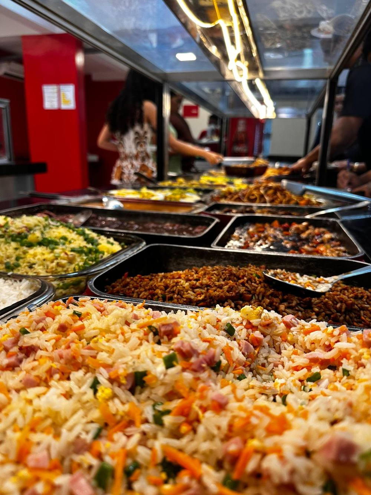
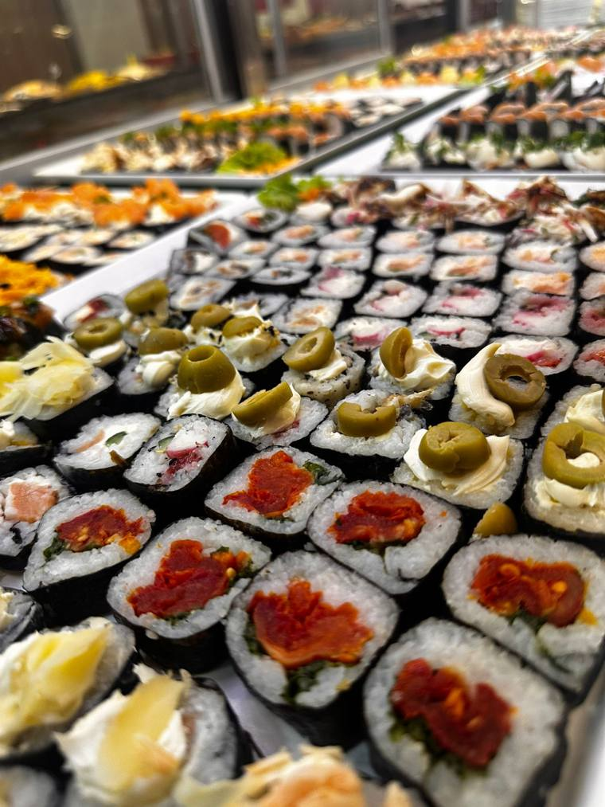
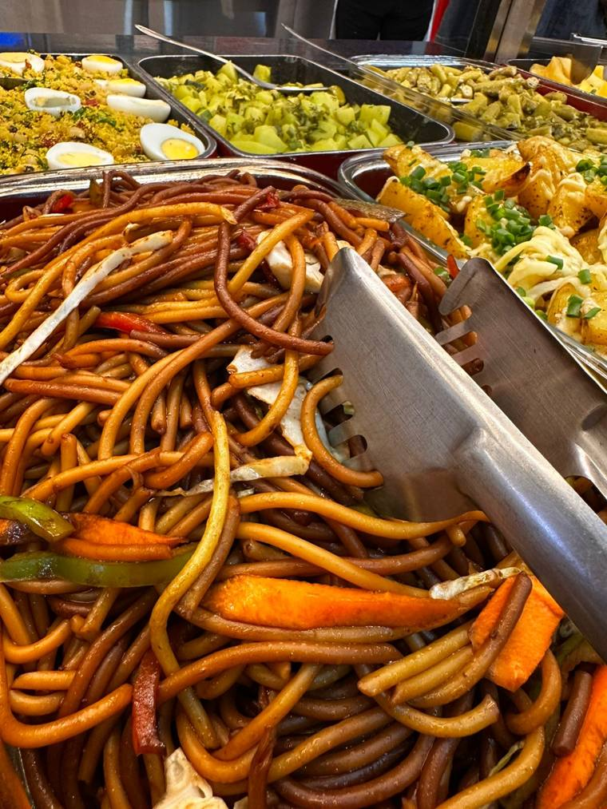
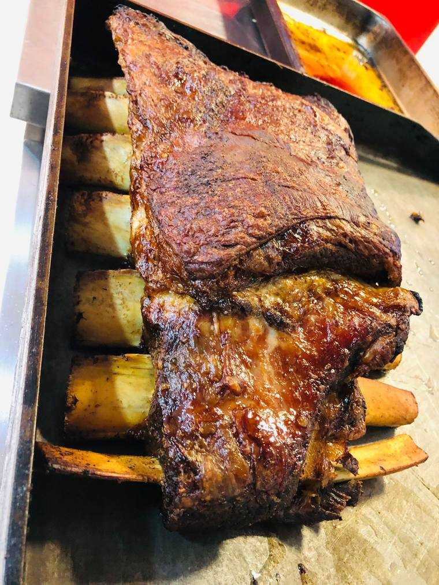

Sushi, comida chinesa e cozinha brasileira.
O melhor da culinária chinesa, japonesa e brasileira. Monte seu prato com o que mais gostar, todos os dias no Gama.
Todos os dias, das 11h às 15hSetor Central LT 02, térreo B1, Gama – DF

Três cozinhas no mesmo balcão
Escolha um estilo ou misture os três no mesmo prato.

Sushi e cozinha japonesa
Vitrine cheia de sushis para escolher à vontade.

Comida chinesa
Macarrão, arroz e clássicos da cozinha oriental.

Cozinha brasileira
Pratos tradicionais e carnes assadas para completar a refeição.
O buffet por dentro
Toque em uma foto para ampliar.
O buffet em movimento
Toque em um vídeo para assistir.